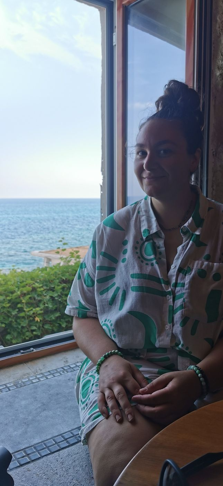

Qui sommes-nous ?

Morgane
Probablement que pour certains cela signifie peu, mais pour moi, les couleurs ça rend vivant !
Voir le soleil faire jouer les nuances de mon bracelet, la lumière passer au travers des perles, les regarder s'accorder avec ma tenue ou bien mon humeur. Cela me fait du bien. Comme de la poésie !
Il me semble que tout commence là. Ce que l'on prend le temps de remarquer, lorsque nous sommes perdues dans nos pensées, ou que l'on a un instant pour soi.
Le petit coquelicot qui se dandine au gré du vent, les oranges de Sicile sur les arbres de ma grand-mère, le moment où la mer rencontre le sable chaud. Quand la lumière passe au travers des arbres et que la nature nous chuchote à l'oreille.
Pianiste des couleurs et amoureuse des petites choses anodines, chacune de mes créations est inspirée d'un de ces moments simples et précieux... Il me semble que cela suffit.
Et si le cœur vous en dit, bienvenue à l’atelier TUTTI.
Avec toute mon attention,
Morgane 🌞
Jérôme
Passionné d’art et de création sous toutes ses formes, j’ai toujours aimé entreprendre et donner vie à des projets faits main.
Bien plus qu’un simple passe-temps, j’apprécie chaque étape du processus créatif : cette phase de réflexion et d’analyse propice au dialogue avec soi-même, puis le moment où l’imaginaire prend le relais et s’exprime librement.
Souvent dans mes pensées, mais jamais dans le vide, les idées affluent, s'entrechoquent, bouillonnent… jusqu’à exploser en de nouvelles envies.
Au départ, il s’agissait simplement de me fabriquer des bracelets à mon goût, mais très vite, c’est devenu une évidence : j’avais envie de les imaginer et de les réaliser aussi pour les autres, avec le même soin, la même passion que pour les miens.
J’aime combiner les matières, révéler les textures, jouer sur les contrastes et les reliefs entre pierres fines, métal travaillé et fusion de tout ça.
Photographe amoureux d’argentique en noir et blanc, je suis particulièrement sensible aux nuances de gris, aux forts contrastes entre ombre et lumière et aux rendus tranchés. Cette recherche d’équilibre entre force et douceur, brillance et opacité, guide tout particulièrement mes créations.
Je vous invite à découvrir mon univers… Et à me contacter si l’envie vous prend d’en parler.
Créativement !
Jérôme 📷